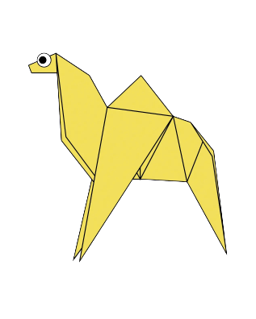
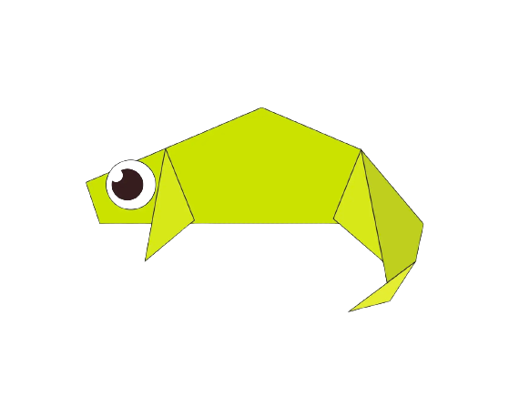
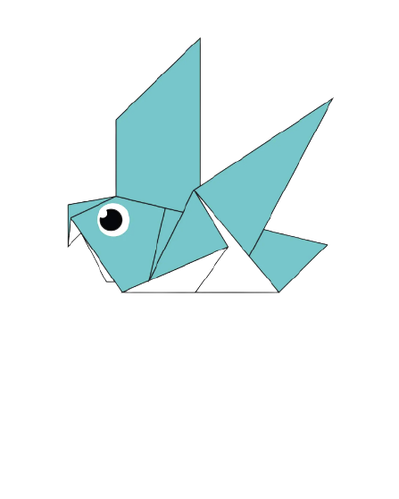
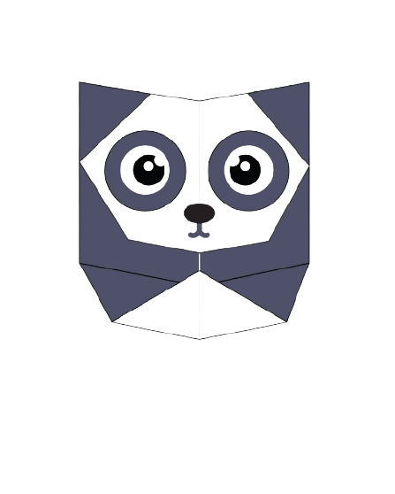
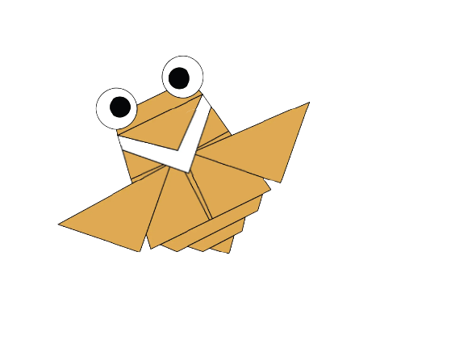
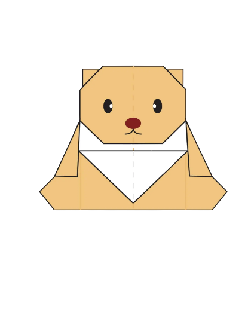

Interesting facts about Camel
- Camel's ears are furry.
- Camel can move easily across the sand because of its specially designed feet.
- When they find water, they drink as much as possible.

Interesting facts about Chameleon
- Chameleons are reptiles that are part of the iguana suborder.
- Changing skin color is an important part of communication among chameleons.
- Most chameleons have a prehensile tail that they use to wrap around tree branches.

Interesting facts about Pigeon
- Pigeons are incredibly complex and intelligent birds.
- Pigeons are reowned for their outstanding navigational abilities.
- Pigeons have excellent hearing abilities.

Interesting facts about Panda
- Giant panda looks cuddly and cute, but it's much bigger than you think.
- Giant pandas are good at climbing trees and can also swim.
- Pandas are "lazy" — eating and sleeping make their day.

Interesting facts about Flying Cicada
- Cicadas can survive a huge fall as babies, or nymphs.
- Cicadas have blue, white or grayish eyes.
- The loud whirring or buzzing sound we hear is an all-male cicada chorus.

Interesting facts about Teddy Bear
- The teddy bear is normally a cub or baby bear.
- A teddy bear is a popular and well-known toy, They are usually small and soft.
- Early 20th century teddy bears were made from mohair, the hair of goats.